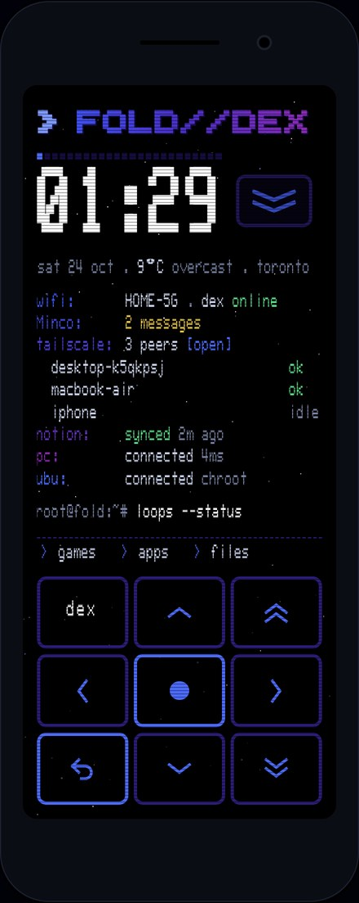
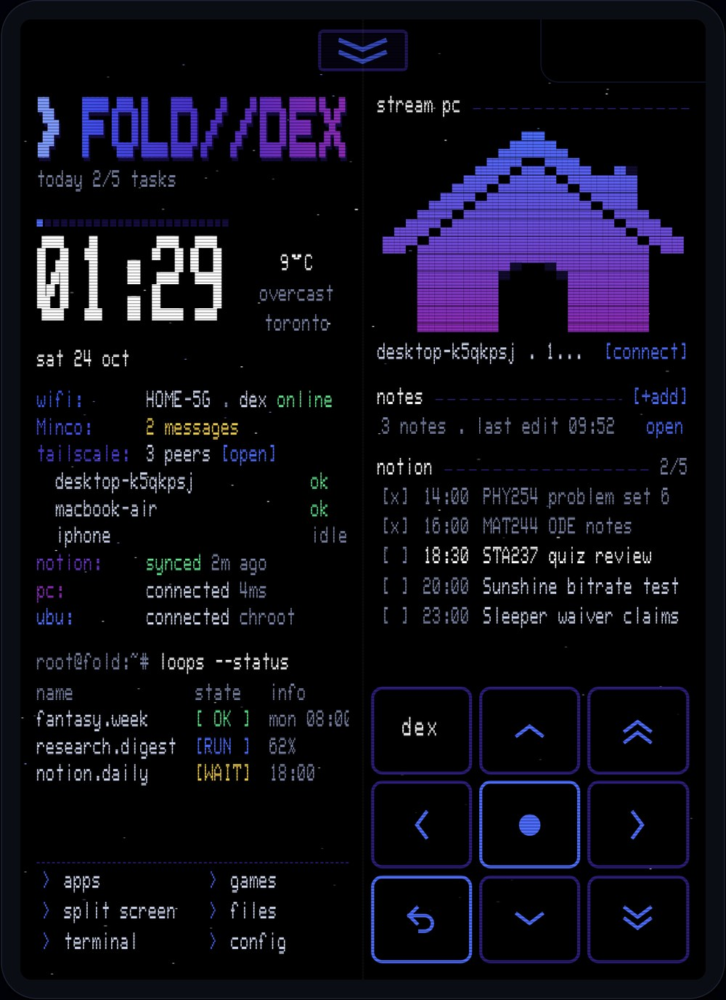

https://github.com/refriderator/Fold-Dex
I had an old Galaxy Fold 1 lying around and wanted to turn it into a little cyberdeck. It's rooted and runs Ubuntu in a chroot, but the first thing I needed was a home screen that wasn't Samsung's. So I made my own, called Fold Deck, and it runs on both the cover screen and the big inner one.
The look is a black terminal with the WarGames font and dark blue and purple accents. There's a d-pad that's always on screen, so you can drive the whole thing like a handheld without touching anything else.
Closed
Folded, it's a big clock with the date and weather, then a few status lines: wifi, Tailscale, Notion, my PC and whether the Ubuntu side is up. Under that are games, apps and files, then the d-pad.

Open
Unfolded, the status stuff moves to the left half. The right half has a button to stream my PC over Moonlight, my notes, and today's tasks from Notion that I can tick off.

How it works
The whole launcher is one HTML page running inside a tiny Android app. The Java side is only a bridge: it hands the page the battery and wifi, opens apps, and runs root commands. That made it way faster to work on, since I can open the page in a browser on my laptop and tweak it without rebuilding anything.
When the phone boots, Termux:Boot mounts the Ubuntu chroot and starts an SSH server, so I can get into the phone from my PC over Tailscale wherever it is.
Next up is getting the games drawer solid and the built-in assistant (dex) working properly.